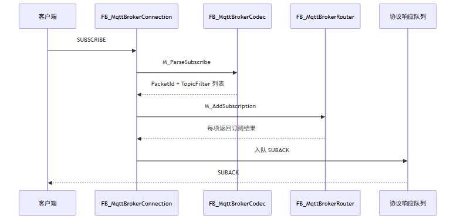
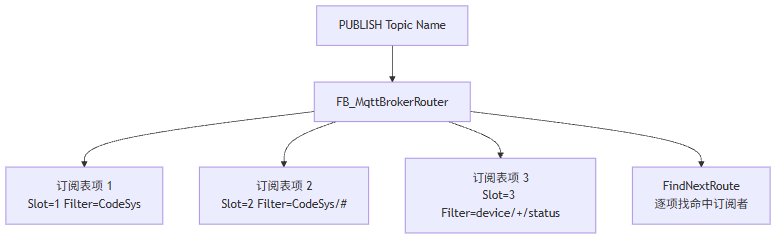

这一篇讲 Broker 侧订阅系统。SUBSCRIBE 不是把主题字符串存起来就完事，Broker 必须区分 Topic Name 和 Topic Filter，校验+、#，维护多客户端订阅表，并在 PUBLISH 到来时按规则查找所有订阅者。
适合谁收藏
- 订阅显示成功但收不到消息的人
- 想把 MQTT 通配符匹配写对的人
- 正在实现多客户端路由的人
- 想从 Client 视角切到 Broker 视角的人
订阅成功了，但发布后收不到消息。
这个问题在 Broker 开发里非常常见。
原因通常不是客户端没订阅，而是 Broker 把 SUBSCRIBE 当成了“存一个字符串”。
先给结论：
客户端发布的是 Topic Name，客户端订阅的是 Topic Filter。 Broker 必须保存 Topic Filter，并在每次 PUBLISH 时用 Topic Name 去匹配所有 Filter。
一、Topic Name 和 Topic Filter 不是一个东西
这张表先记住：
| 名称 | 出现位置 | 是否允许通配符 | 示例 |
|---|---|---|---|
| Topic Name | PUBLISH | 不允许 | CodeSys、device/1/status |
| Topic Filter | SUBSCRIBE | 允许 | CodeSys、device/+/status、device/# |
很多问题都出在这里。
如果客户端订阅：
device/+/status然后另一个客户端发布：
device/plc01/statusBroker 不能做字符串相等判断。 它必须做 Topic Filter 匹配。
二、订阅链路完整流程

SUBSCRIBE 至少要做 4 件事：
- 解析 PacketId。
- 逐项读取 Topic Filter 和请求 QoS。
- 校验 Topic Filter 合法性。
- 每一项生成 SUBACK 返回码。
三、Topic Filter 校验规则
通配符不是随便放。
| Filter | 是否合法 | 原因 |
|---|---|---|
CodeSys | 是 | 普通主题 |
device/+/status | 是 | + 占一个层级 |
device/# | 是 | # 位于最后一层 |
device/#/status | 否 | # 必须是最后一个层级 |
device/a+ | 否 | + 必须独占一个层级 |
device/#abc | 否 | # 必须独占一个层级 |
| `` | 否 | 空 Filter 不合法 |
所以 Broker 里需要独立函数：
F_MqttIsValidTopicFilter(sTopicFilter := sFilter)不要把这个校验散落在 SUBSCRIBE 解析里。
四、订阅表应该保存什么
当前轻量 Broker 使用固定资源模型，不搞动态链表。
订阅表可以理解为：
| 字段 | 说明 |
|---|---|
xUsed | 表项是否有效 |
uiSlotIndex | 属于哪个客户端槽位 |
sClientId | 客户端标识，便于诊断 |
sTopicFilter | 订阅过滤器 |
eMaxQoS | 客户端请求的最大 QoS |
udiLastUpdateMs | 最近更新时间 |
结构关系大概是：

五、匹配规则示例
| Topic Filter | Topic Name | 是否匹配 |
|---|---|---|
CodeSys | CodeSys | 是 |
CodeSys | CodeSys/a | 否 |
CodeSys/# | CodeSys | 是 |
CodeSys/# | CodeSys/a/b | 是 |
+/status | plc01/status | 是 |
+/status | area/plc01/status | 否 |
device/+/status | device/plc01/status | 是 |
device/+/status | device/plc01/run/status | 否 |
核心函数就是：
xMatch := F_MqttTopicMatch(
sTopicFilter := stSubscription.sTopicFilter,
sTopicName := stPublish.sTopicName);这类函数必须写得很克制：层级扫描、通配符规则、边界长度，别为了几台客户端搞复杂树结构。
六、多 Topic SUBSCRIBE 不能只回一个结果
客户端可能一次订阅多个主题：
SUBSCRIBE PacketId=7
1. CodeSys QoS0
2. device/+/status QoS1
3. bad/#/topic QoS1Broker 应该返回多个结果：
| Topic Filter | 结果 |
|---|---|
CodeSys | Granted QoS0 |
device/+/status | Granted QoS1 |
bad/#/topic | Failure |
所以 SUBACK 不是简单一个成功码。
90 05 00 07 00 01 80拆开看：
| 字节 | 含义 |
|---|---|
90 | SUBACK |
05 | Remaining Length |
00 07 | PacketId |
00 | 第 1 项 Granted QoS0 |
01 | 第 2 项 Granted QoS1 |
80 | 第 3 项 Failure |
七、ST 代码入口
| 代码入口 | 作用 |
|---|---|
FB_MqttBrokerCodec.M_ParseSubscribe | 解析 SUBSCRIBE，提取 PacketId 和 Topic Filter |
FB_MqttBrokerRouter.M_AddSubscription | 写入或更新订阅表 |
FB_MqttBrokerRouter.M_FindNextRoute | PUBLISH 到来时查找下一个命中订阅者 |
F_MqttIsValidTopicFilter | 校验 Topic Filter 合法性 |
F_MqttTopicMatch | 判断 Topic Name 是否命中 Topic Filter |
逻辑可以压缩成：
IF F_MqttIsValidTopicFilter(sTopicFilter := sFilter) THEN
fbRouter.M_AddSubscription(
uiSlotIndex := uiSlotIndex,
sClientId := sClientId,
sTopicFilter := sFilter,
eMaxQoS := eRequestQoS);
byReturnCode := byGrantedQoS;
ELSE
byReturnCode := 16#80;
END_IF八、现场排障表
| 现象 | 先看什么 | 可能原因 |
|---|---|---|
| 客户端显示订阅失败 | SUBACK 返回码 | Topic Filter 非法或 ACL 拒绝 |
| 订阅成功但收不到 | 订阅表是否存在该 Filter | Router 没写入或写错槽位 |
| 普通主题能收，通配符收不到 | F_MqttTopicMatch | + / # 规则实现错误 |
| 多主题订阅只有第一项生效 | uiSubItemCount | 解析循环只处理第一项 |
| 取消订阅后还收到 | 订阅表清理 | UNSUBSCRIBE 没删除对应 Filter |
模型边界与验证路径
SUBSCRIBE 的本质是路由规则注册，不是字符串保存。
从模型上看，Topic Filter 是规则，Topic Name 是事实。Broker 的职责就是把事实拿去匹配规则，再把结果映射到客户端槽位。
| 结论 | 可信度 | 依据 | 验证路径 |
|---|---|---|---|
| Topic Name 和 Topic Filter 必须分开处理 | high | MQTT 订阅与发布语义 | 用 device/+/status 订阅，再发布 device/plc01/status |
| 通配符校验应独立封装 | high | 源码可维护性和边界复用 | 用合法 / 非法 Filter 对比 SUBACK 返回 |
| 当前固定表路由适合小规模 PLC Broker | medium | 当前目标是 5~8 个客户端 | 增加客户端和订阅项后观察扫描周期和队列水位 |
如果以后订阅规模明显扩大，问题就不再是“这个函数怎么写”，而是订阅索引模型要不要升级。当前文章不把树形索引作为默认方案，因为这不是当前轻量 Broker 的主要瓶颈。
九、这一篇你最该记住的 5 句话
- PUBLISH 使用 Topic Name，SUBSCRIBE 使用 Topic Filter。
- Broker 路由不能只做字符串相等，必须支持
+和#。 - 多 Topic SUBSCRIBE 必须逐项返回 SUBACK。
- 订阅表要绑定客户端槽位，而不是只保存主题字符串。
- 订阅成功不等于路由正确，现场一定要看订阅表和匹配函数。
下篇预告
下一篇讲 PUBLISH。
重点是：
PUBLISH 不是收到就转发，Broker 必须处理 QoS、PacketId 和多客户端 fanout。
我们会重点拆 PacketId 为什么不能直接沿用发布者的。
完整 ST 代码
下面这段来自 FB_MqttBrokerCodec.M_ParseSubscribe.st。它体现了 SUBSCRIBE 的核心抽象：一个报文里可能有多个 Topic Filter，所以解析结果不能只是一条字符串，而应该是 ST_MqttBrokerTopicItem 数组。
WHILE uiOffset < uiFrameLen DO
IF uiItemCount >= GVL_MqttBroker.cnMaxTopicItemsPerPacket THEN
eError := E_MqttBrokerError.uiPacketTooLarge;
M_ParseSubscribe := FALSE;
RETURN;
END_IF
uiIndex := uiItemCount + 1;
IF NOT F_MqttReadString(
aBuffer := aBuffer,
uiOffset := uiOffset,
sValue := aTopicItems[uiIndex].sTopicFilter,
uiBufferLen := uiFrameLen,
uiMaxLen := GVL_MqttBroker.cnMaxTopicLen,
uiStringLen => uiFilterLen) THEN
eError := E_MqttBrokerError.uiInvalidTopic;
M_ParseSubscribe := FALSE;
RETURN;
END_IF
IF uiOffset >= uiFrameLen THEN
eError := E_MqttBrokerError.uiProtocolMalformed;
M_ParseSubscribe := FALSE;
RETURN;
END_IF
byQoS := aBuffer[uiOffset];
uiOffset := uiOffset + 1;
CASE byQoS OF
0:
aTopicItems[uiIndex].eQoS := E_MqttQoS.byQoS0;
1:
aTopicItems[uiIndex].eQoS := E_MqttQoS.byQoS1;
2:
aTopicItems[uiIndex].eQoS := E_MqttQoS.byQoS2;
ELSE
eError := E_MqttBrokerError.uiUnsupportedQoS;
M_ParseSubscribe := FALSE;
RETURN;
END_CASE
IF NOT F_MqttIsValidTopicFilter(sFilter := aTopicItems[uiIndex].sTopicFilter) THEN
eError := E_MqttBrokerError.uiInvalidTopic;
M_ParseSubscribe := FALSE;
RETURN;
END_IF
aTopicItems[uiIndex].xUsed := TRUE;
aTopicItems[uiIndex].uiFilterLen := uiFilterLen;
aTopicItems[uiIndex].byReturnCode := TO_BYTE(aTopicItems[uiIndex].eQoS);
uiItemCount := uiItemCount + 1;
END_WHILE订阅表不是简单追加，重复订阅同一 Topic Filter 时要更新 QoS，不能制造重复路由。
FOR uiIndex := 1 TO GVL_MqttBroker.cnMaxSubscriptions DO
IF aSubscriptions[uiIndex].xUsed THEN
IF (aSubscriptions[uiIndex].uiSlot = uiSlot) AND (aSubscriptions[uiIndex].sTopicFilter = sTopicFilter) THEN
aSubscriptions[uiIndex].eMaxQoS := eMaxQoS;
aSubscriptions[uiIndex].xActive := TRUE;
eLastError := E_MqttBrokerError.uiNoError;
M_AddSubscription := TRUE;
RETURN;
END_IF
ELSIF uiFreeIndex = 0 THEN
uiFreeIndex := uiIndex;
END_IF
END_FOR
评论区预留
这里先保留评论和回复结构，不接入第三方服务。后续统一决定登录、匿名、审核、反垃圾和静态站兼容策略。